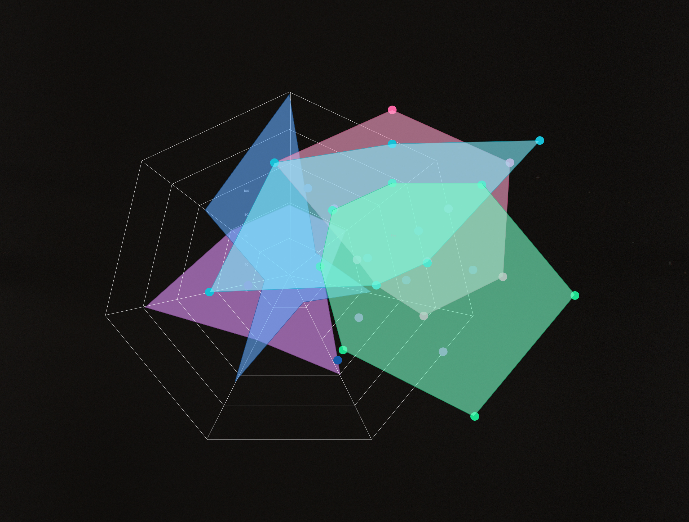

Mobius is an AI-powered data querying platform designed to enhance the way investors, corporate executives, and data analysts interact with financial market trends. The project's goal was to improve the accuracy, clarity, and usability of graph-based results, ensuring that users receive insightful and actionable data visualizations when querying market trends.
Financial professionals rely on data-driven insights to make informed decisions, but traditional querying tools often produce cluttered or unclear graph results. Users needed a solution that:
Before diving into the design, thorough research was conducted, including [user research methods, competitive analysis, wireframing]. The insights gained helped shape the direction of the project.
With research insights in place, the design phase involved wireframing, prototyping, and iterating on the UI/UX. The final solution was a user-friendly interface that [highlight key features and benefits].